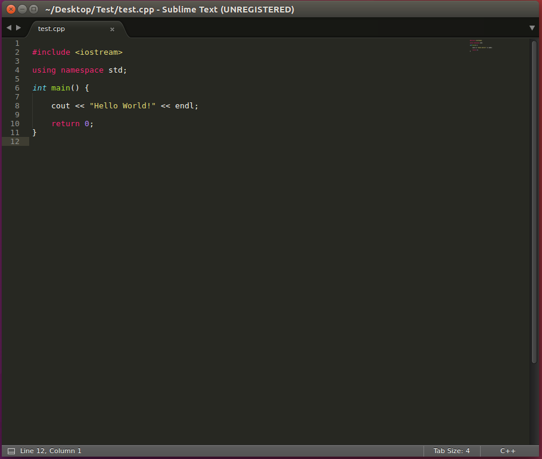
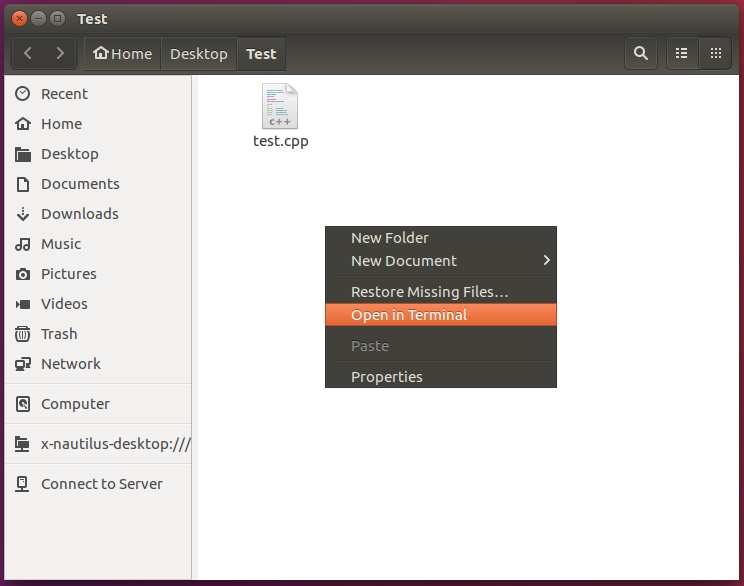
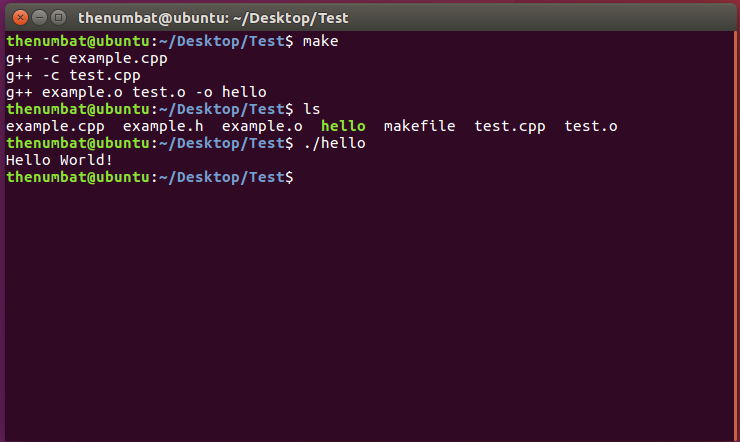
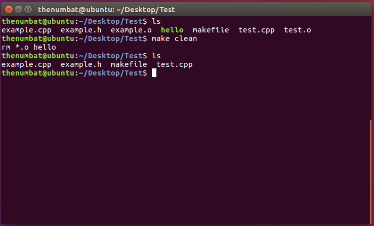

Install
This guide assumes you're somewhat familiar with the linux terminal.
Most installs of linux come with the GCC compiler, but if you don't have it for some reason, you can install it as such:

To test if the install worked, try running "g++." This will be how you invoke the compiler.

Next, go to the sublime text website and download the version for your OS.

Once that is installed, open it up.

Build
Create a new file and save it somewhere with the extension .cpp. This tells sublime to treat the file as C++ code. Next, write a "hello world" program.
Navigate the terminal to where you saved the file, or open the folder and select "open in terminal."
To compile the program, run "g++" with the code file. This should generate "a.out"

To run your program, simply run "a.out"

The GCC compiler supports many command line options to modify how the compiler compiles your program. Here's a list. For example, you can use the "-o" option to specify the name of the output executable.

Adding Files
To add a class to your program, simply create the .h and .cpp files.

Write some test code.

There are two ways to compile your program. First, you can simply specify both .cpp files to be compiled. This should give you what you expect. Again, run "a.out" to run the program.

You can also individually compile the .cpp files. This is done with the "-c" compiler option. Compiling individually will generate an object (.o) file for each .cpp. To actually build the program, simply run "g++" with each object file. Again, run "a.out" to run the program.

Makefiles
You can automate the build process through the use of makefiles. To start, create a file named "makefile" and open it in sublime.

The basic structure of a makefile is as such. Each statement begins with what that step is trying to build. For the entire program, that is "all:". Next, there are the dependencies needed to execute that step of the build. For example, the object files are necessary to build "all:". On the next line, the actual command is specified. This is the "g++" statement exactly as you'd write it in the terminal. You can specify files, compiler flags, etc.
Dependencies can be code files (which are always there), or they can be intermediate files that have their own build step. When making your program, the compiler will go through each step in order to build each dependency. Finally, you can add a "clean:" command to clean up intermediate files.

To use your makefile, simply call "make" in the makefile directory. In the example, this produces the same result as individually compiling the .cpp files and linking them together. Because we specified "-o" in the final build step, we can run the program from "hello."
One of the most useful features of makefiles is that they only preform the build steps required. This means that if you only change one class, or delete one object file, the build process will only update what it needs to. This can vastly speed up compile time. For example, deleting "example.o"...

Finally, to invoke the "clean:" part of your makefile, simply specify "clean" as an option for "make."
